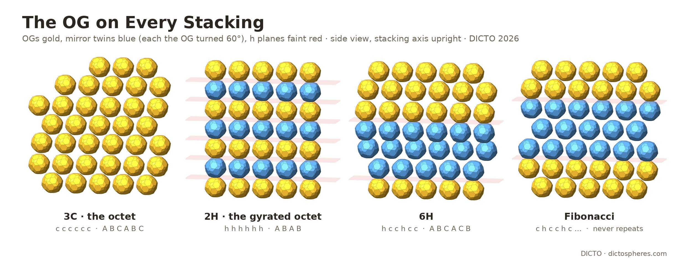
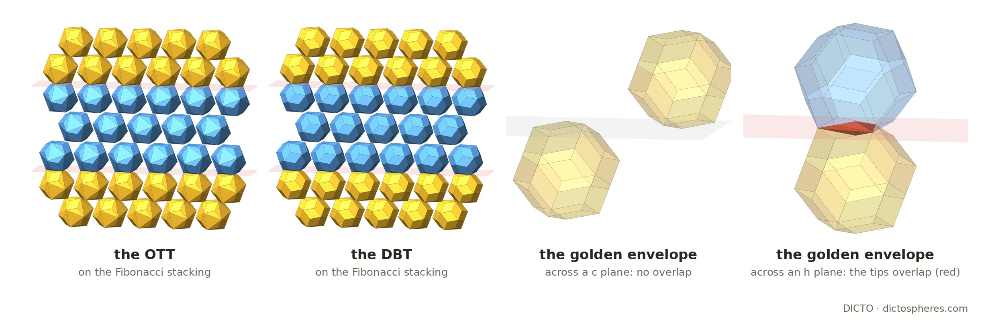

Twins, polytypes and a Fibonacci crystal: two general rules for the Ogdoecontahedron and its family in the tetrahedral–octahedral honeycomb stacked in any order, with exact kits for the classical polytypes and for a stacking that never repeats

Layers. Frame as in [2, 3]: the octahedron |x| + |y| + |z| ≤ R, R = 2φ/3; a cell of the honeycomb (one octahedron, two tetrahedra) has volume (32 + 16√5)/27. Cut at right angles to the three-fold axis (1,1,1), the honeycomb falls into layers one octahedron thick, the slabs (2k − 1)R ≤ x + y + z ≤ (2k + 1)R. The planes between layers hold the honeycomb's vertices, which are the centres of a close packing of spheres; the layers of the honeycomb lie between the layers of that packing.
Two steps. On a layer the next one lies either as in the octet truss (the step c, a translation) or as the mirror image of the layer in the plane they share (the step h). Across a c plane an octahedron meets tetrahedra; across an h plane octahedron meets octahedron and tetrahedron meets tetrahedron. Any word in c and h is a stacking: all c is the octet (fcc, 3C), all h the gyrated octet (hcp, 2H) [4, 5]. These are the h and c of Jagodzinski's notation for close packings [6] (c is often written k), and periodic words give the polytypes named by Ramsdell [7] and the IUCr [8].
Built and read back (exact). polytype_exact.py builds any word layer by layer with rational maps (a mirrored layer takes its next step downward in the reference frame and is then mirrored up), checks that layer k lies at x + y + z = 2kR, and checks the word against the geometry: above an octahedron's top face lies an octahedron exactly at the h planes (the c and h steps themselves were also checked by hand). The A/B/C sequence of the packing follows from the word (c keeps the turn A → B → C, h reverses it) and gives the Ramsdell symbols in Table 2.
Rule. Let a solid S, centred at the origin, be centre-symmetric (S = −S) and have a 120° turn about the axis n at right angles to the layers. Then its mirror image in a plane at right angles to n is S turned 60° about n.
Proof. The mirror M in the plane through the centre is the inversion composed with the half turn H about n: M = −H. With S = −S, M(S) = H(S). The half turn is three 60° turns, H = T⁶⁰∘T⁶⁰∘T⁶⁰ = T⁶⁰∘T¹²⁰, and T¹²⁰(S) = S, so H(S) = T⁶⁰(S). A mirror in a parallel plane differs by a translation only. ∎ The twin is a true twin (not S itself) unless S also has the mirror M as a symmetry. This is the spinel law of cubic crystals [9], where the twin is a half turn about ⟨111⟩; for a solid with the 120° turn the half turn and the 60° turn give the same twin.
The rule is checked exactly for the OG, the DICTO OTT, the DBT and the golden envelope (Table 1), with the rational 60° turn that takes (1,0,0) to (2/3, 2/3, −1/3); for the OCD Stella it was checked exactly in [3].
Rule. If a solid lies in its own layer, and its copies in the octahedra of one layer do not overlap, then it fits every stacking.
Why. Layers are disjoint slabs, so solids in different layers cannot overlap. Every layer of every stacking is the reference layer moved by an isometry whose linear part is the identity or the reflection in the layer plane (a translation, or a mirror possibly followed by a shift within the plane); the first carries the solids to translates, the second to their mirror images, which by the twin rule are the solids turned 60°. Within a layer nothing depends on the word. ∎ A solid inside its octahedron lies in its layer, so it fits every stacking, and the rest of the octahedron can be cut by the planes through its centre and edges into 8 caps, the tetrahedra kept whole. For the OG, whose symmetry makes the caps congruent up to hand (4 left, 4 right), this is the cell kit of [3]: at an h plane a left and a right cap join into a twin cap, and two tetrahedra into a bipyramid.
| Solid | Centre-symmetric | 120° turn about (1,1,1) | Mirror across the layer | Mirror image = 60° turn | In its octahedron | In its layer | Fits | Share of space |
|---|---|---|---|---|---|---|---|---|
| OG | yes | yes (all four axes) | no | yes | yes | yes | every stacking | 1025/114 − 145√5/38 ≈ 45.89% |
| OCD Stella | yes (float) | yes, all four axes (float) | no (float) | yes [3] | yes [3] | yes | every stacking | (1208 − 534√5)/27 ≈ 51.63% [3] |
| DICTO OTT | yes | yes (all four axes) | no | yes | yes | yes | every stacking | 176/3 − 26√5 ≈ 52.89% |
| DBT | yes | yes (this axis only) | no | yes | no | yes | every stacking | 493/6 − 73√5/2 ≈ 55.02% |
| golden envelope | yes | yes | no | yes | no | no | the octet only | 90 − 40√5 = 10/φ⁶ ≈ 55.73% [2] |
Table 1. Exact tests (polytype_exact.py) for one octahedron at the origin, except where marked float (the OCD Stella's symmetries, from the float copy of its exact corners; its twin, its place in the octahedron and its share, 3/2 × (604 − 267√5)/9 of its octahedron's, are exact in [3]). Shares are of the whole space and are the same in every stacking the solid fits.
The DBT. The DBT pokes out of its octahedron through its six side faces, into the tetrahedra of its own layer, but its two flat poles keep it inside the layer. In [3] it was shown to fill the gyrated octet's octahedra pole to pole without overlap; by the fit rule it fits every stacking. The exact overlap test agrees: with the reference DBT in the middle layer of three and every neighbour within reach, there is no overlap for any of the four pairs of boundaries cc, ch, hc and hh.
The golden envelope. Without its two pole cuts the DBT is the golden envelope of [2], a rhombic triacontahedron. Its two three-fold tips leave the layer. Across a c plane they meet tetrahedra and the envelope fits, as in the octet [2]; across an h plane the tips of two envelopes meet and the envelopes overlap, by exactly (−88 + 40√5)/81 ≈ 0.017811 (this supersedes the float estimate of about 0.0175 in [3]), which is the volume of the two tips the DBT cuts off. So the cut that makes the DBT is exactly what every stacking needs.

For the OG, the pieces per cell follow from the share f of h planes. Each cell has one plane between its layer and the next, so per cell there are f twin caps and f bipyramids, and the caps and tetrahedra that did not join: 8 − 2f caps and 2 − 2f tetrahedra, with the OG (or its twin) once. The volumes are those of [3]: cap (277 − 79√5)/1539, twin cap twice that, tetrahedron (16 + 8√5)/81, bipyramid twice that. The twin-cap counts were also counted from the geometry, layer by layer (polytype_exact.py), for every word in Table 2.
| Polytype | Word (Jagodzinski) | Packing | Share of h planes f | Caps | Twin caps | Tetrahedra | Bipyramids |
|---|---|---|---|---|---|---|---|
| 3C (octet) | c | ABC | 0 | 8 | 0 | 2 | 0 |
| 2H (gyrated octet) | h | AB | 1 | 6 | 1 | 0 | 1 |
| 4H | hc | ABCB | 1/2 | 7 | 1/2 | 1 | 1/2 |
| 6H | hcc | ABCACB | 1/3 | 22/3 | 1/3 | 4/3 | 1/3 |
| 9R | hhc | ABACACBCB | 2/3 | 20/3 | 2/3 | 2/3 | 2/3 |
| 15R | hcchc | ABCACBCABACABCB | 2/5 | 36/5 | 2/5 | 6/5 | 2/5 |
| Fibonacci | c → ch, h → c | never repeats | (3 − √5)/2 | 5 + √5 | (3 − √5)/2 | √5 − 1 | (3 − √5)/2 |
Table 2. Kit pieces per cell for the OG, one OG (or twin) per cell in every case. Ramsdell symbols and packings computed from the words; 4H, 6H and 15R are among the best-known polytypes of silicon carbide [7, 8]; 9R is the samarium-type stacking of close-packed metals. Caps are 4 − f of each hand; each twin cap takes one of each.
Take the word grown by c → ch, h → c from c: c h c c h c h c c h c c h …. Its share of h tends to 1/φ² = (3 − √5)/2 (exactly 2584 of the first 6765 letters, both Fibonacci numbers), and since that number is irrational the word never repeats. No two h planes are adjacent and no three c planes follow each other, so the twin planes come 2 or 3 layers apart, in the Fibonacci order. By the fit rule the OG, the OTT, the OCD Stella and the DBT fill their places on this stacking exactly, and by Table 2 the OG crystal needs per cell 5 + √5 caps, (3 − √5)/2 twin caps, √5 − 1 tetrahedra and (3 − √5)/2 bipyramids: golden numbers, from the stacking alone. Each layer is periodic and the order of the layers is not, so the crystal is periodic in two directions and aperiodic in the third, with the same pieces as the octet and the gyrated octet. Fibonacci words are the standard example of aperiodic order in one dimension [10]. The Fibonacci stacking itself is not claimed here, only the OG crystal on it and its kit.
In the sources checked (the full text of the 80 library sources listed in the appendix, and web searches on 20 October 2026) we found the stackings and the notation but not these solids on them.
Exact (ℚ(√5)): polytype_exact.py, with log polytype-exact.log (29 PASS) and data polytype-exact.json; it uses the exact corners of the OG ([2], studies/2026-10-18-ocd-octet/data/step1-ocd-exact.json), the DBT and the OTT ([3], dbt-exact.json, cut8-exact.json) and the exact tools of [2] (q5.py, exactpoly.py). Float: jewel_symmetry.py (the Jewel's symmetries). Figures: polytype_figs.py (float copies of the exact solids), shots.mjs, polytype_compose.py.
The full text of the 80 sources below in DICTO's reference library was searched on 20 October 2026 for: polytype, stacking fault, stacking sequence, Jagodzinski, Ramsdell, hexagonal close packing, twin, spinel, Fibonacci and gyrated. None contains the results of this paper. A web search also showed that Fibonacci chains have been used to describe heavily faulted ZnS stackings (Farkas-Jahnke, IUCr congress abstract; not read, not verified). The relevant library hits are the Wikipedia pages on crystal twinning and on the honeycomb [4, 9], Cadotte et al. [5] and Gabbrielli et al. [11] on the honeycomb's stackings, Kléman (2013) on stacking faults in quasicrystals, and Baake and Grimm [10] and Kramer (2011) on Fibonacci order. Thirteen further items are page images without a text layer (the patents of Fuller, Snelson, Pearce, Baer, Hogan, Bergman and Lalvani, and Fedorov 1885).
Web searches (20 October 2026): polytypism and the Ramsdell and Jagodzinski notations (checked: [6, 7, 8]); Fibonacci and quasiperiodic stackings of close-packed layers; stackings of the tetrahedral–octahedral honeycomb.
| Author(s) | Year | Title |
|---|